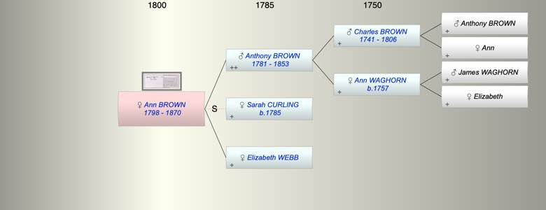
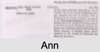

| [Index] |
| Ann Good BROWN (1798 - 1870) |
|  |
|  |
| b. 26 May 1798 at Bethnal Green |
| d. 11 Jan 1870 at Clapham Rise London aged 71 |
| Parents: |
| Anthony BROWN (1781 - 1853) |
| Elizabeth WEBB |
| Events in Ann Good BROWN (1798 - 1870)'s life | |||||
| Date | Age | Event | Place | Notes | Src |
| 26 May 1798 | Ann Good BROWN was born | Bethnal Green | Note 1 | ||
| 15 May 1853 | 54 | Death of father Anthony BROWN (aged 72) | Battersea, London | Note 2 | |
| 11 Jan 1870 | 71 | Ann Good BROWN died | Clapham Rise London | Note 3 | |
| Created on a Mac™ using iFamily for Mac™ on 8 Oct 2023 |